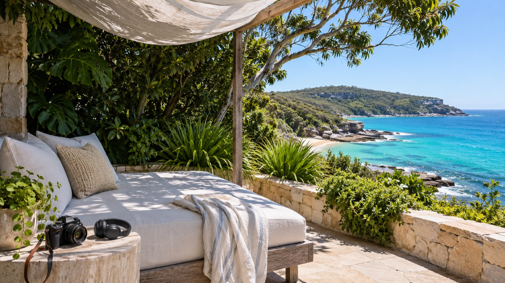

A little less editing. A lot more living.
Creator Flow
Your story.
Your voice.
More places.
A new way to turn the things you capture into the stories you want to share.
I'm interestedMade for the moments in between
Go make the memory.
Bring the story home.
That place you found. The stay worth talking about. The small detail everyone else missed. Keep your point of view, without spending your evening in an editing timeline.
The workflow we're building
From a thought to a finished story.
- 01 / Capture
Tell it your way.
Start with a voice note, a few thoughts and your own photos or clips.
YOUR NOTE“We found this little place by the water. The morning swim was the best part…”
- 02 / Shape
Find the right voice.
Review the script, language and delivery. Choose your own approved voice or a licensed alternative.
Your story, clearly told. - 03 / Share
Make room for every format.
A short reel, a longer story and a considered caption. Review each version before anything is published.
Reel 9:16Feed 4:5Story 16:9
One moment. A few ways to tell it.
A story for every kind of creator.
The places you almost kept to yourself.
Turn a weekend away into a short reel and a longer, more personal story. The location, the little discoveries, the things you would tell a friend.
“Not another hotel tour. The bit that made us want to stay.”Tell us what you'd create
More you.
Less production.
Assisted by AI.
Directed by you.
Your perspective is the point. The proposed workflow puts script review, voice consent and a final content check before publication. AI helps with the production, not with pretending to have lived your experience.
Today: a working local renderer and English transcription. In development: media selection, voice preparation and a creator-facing workflow.
A work in progress. A conversation worth having.
What would
you create?
Travel stories, thoughtful reviews, something for your brand. We'd like to hear what would make this useful to you.
Get in touch